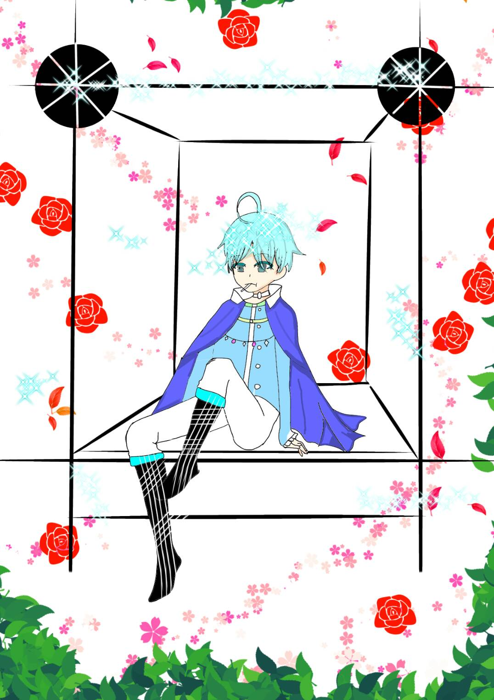

戰車 The Chariot
元素水
對應牌13死神
對應星座巨蟹座
牌義戰車是領導內在兩股衝突意志的堅決行動力，他坐前的兩隻黑白的獅子，是代表無意識和意識，
他戰車上的兩輪月亮，代表兩元論，內心世界的想法與外在表現的茅盾，手握的權丈象徵意志力，只要堅持下去就能成功的力量，
他手上四片羽毛型的盾甲，象徵組成世界的四種物質。他擁有從前面六張牌帶來的一切，並帶此往世界走，能夠行容戰車特性的辭有“掌握力”。
關鍵語勇氣、信心、希望、勝利、身心合一★暗示運用訓練有素的心智
牌正面因堅持而取得成功，狀況在控制之下。
牌反面情緒失控，失敗，挫折，障礙。
提到『戰車牌』最常見的解釋不外乎就是競爭、挑戰、出現對手等，但是『戰車』並不等於『一定會勝利』，
在實際占卜運用時，出現『正位』戰車則是贏面較大，出現『逆位』則是贏面較小，不管是輸還是贏，過程必然是勞心勞力的，
但戰車卻也不是只會向前衝，因為戰車牌占星對應的是水元素巨蟹座，每當遇到了困難、或是兩難的抉擇，肯定還是會停下腳步思考的，
亦或是你的戰鬥並不是為了自己，而是為了『守護、保護』重要的人，或是捍衛自己的價值與地位，在實際占卜『感情』方面的問題時，
戰車牌也有可能是象徵三角關係，或是感情方面遇到了競爭對手。戰車，是戰士也是交通工具，常代表『交通運輸工具』或『旅行』，
若是在某些特定的問題抽到戰車牌（如：出遊運勢如何？、下個月運勢如何等）就要特別小心交通意外的發生。
離開卡牌